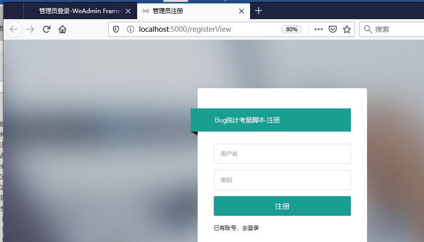
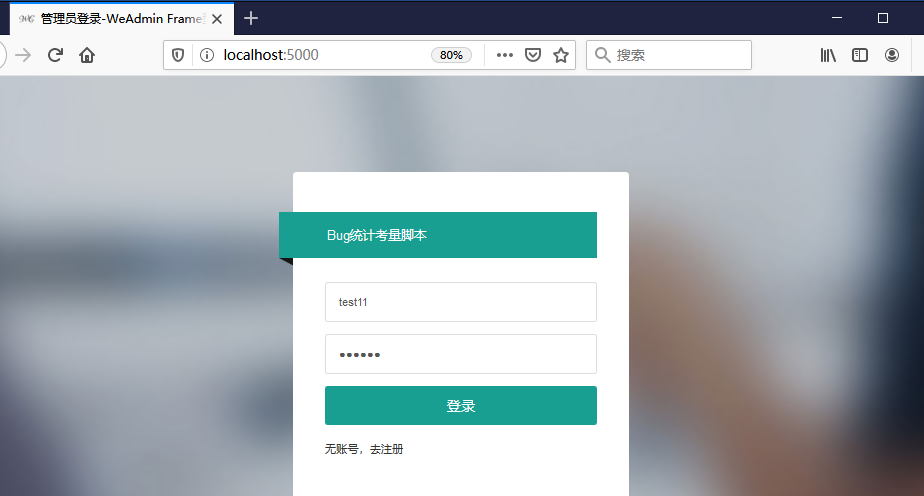

用户手册
bug统计脚本，可录入bug信息； 导入、导出bug信息； 显示某一段时间内"项目维度"和"开发维度"的统计数据。bug统计脚本，可录入bug信息； 导入、导出bug信息； 显示某一段时间内"项目维度"和"开发维度"的统计数据。
建议电脑在1920 * 768 分辨率下预览
1. 网址输入服务器ip:5000访问登录界面， (如 172.16.0.174:5000)，如果用户已经登录，会跳转到主界面，
2. 点击“无账号，去注册”链接进行注册，（或者直接输入http://ip:5000/registerView 注册链接进行注册）如下图
3. 用户名和密码限制为 6-12位字符，且不能出现空格。如果用户已存在，会提示“用户已存在，请重新输入”
4. 如果用户已经有账号，点击“已有账号，去登录”链接跳转至登录界面，进行登录；或者直接访问” http://服务器ip:5000/ loginView”地址进行登录

1. 网址输入服务器ip:5000访问登录界面， (如 172.16.0.174:5000)，如果用户已经登录，会跳转到主界面； 或者直接访问”http://服务器ip:5000/ loginView”地址进行登录，如下图
2. 输入用户名密码 （用户名和密码 限制6-12个字符，且不能出现空格），然后点击登录。如果没有账号，点击“无账号，去注册”链接进行注册
3. 用户名和密码限制为 6-12位字符，且不能出现空格。如果用户已存在，会提示“用户已存在，请重新输入”

注意：1）关闭标签页或者关闭浏览器后，当前用户默认退出。
1. 进入主界面后，鼠标悬浮到右上角”Admin”字符处，会弹出二级菜单，有2个选项 “切换账号”、“退出”
2. 点击“退出”按钮，提示用户是否退出系统，点击是，退出系统，点击否，仍留在系统
1. 目前“切换 账号”功能和“退出”功能一致
1. 点击图标，或者文字“使用手册-网页版”，跳转至网页版的使用说明
2. 点击文字“下载 使用手册-word版”，自动下载word版使用手册
1. 点击图标，或者文字“缺陷级别定义及规则”，跳转至 缺点定义界面（此界面主要记录 bug等级，优先级，难度等级等规则）
1. 点击图标，或者文字“testlink 网址”，跳转至公司 testlink(测试用例管理)网站
1. 点击图标，或者文字“redmine网址”，跳转至公司 redmine (项目管理)网站
1. 点击图标，或者文字“OA网址”，跳转至公司 OA(办公管理)网站
1. 点击图标，或者文字“公司邮箱 网址”，跳转至公司 公司邮箱 网站
1. 登录系统后，点击左侧导航栏，点击按钮“管理员”，会自动查出系统中已有的用户，如下图
2. 点击数据上方按钮“添加”，会传出一个对话框，依次输入用户内容。
要求：1）用户名 和密码为6-12位字符，且不能为空
1. 登录系统后，点击左侧导航栏，点击按钮“管理员”，会自动查出系统中已有的用户
2. 数据表格最右侧，为功能按钮，选中某一个用户，点击删除按钮，提示“是否删除此用户”，点击是，删除用户，如果未删除成功，会给成提示“用户删除失败”；点击否，取消删除。
1. 登录系统后，点击左侧导航栏，点击按钮“管理员”，会自动查出系统中已有的用户
2. 修改操作：1）鼠标点击数据表格内容，输入想要修改的内容，然后按“tab”或者将光标移动到别的地方，修改后的数据会自动保存。数据表格最右侧，为功能按钮，编辑好要修改的内容后，点击”修改”按钮提交，如果修改失败，会有提示。
注意：’用户id,’无法修改
1. 登录系统后，点击左侧导航栏，点击按钮“管理员”，会自动查出系统中已有的用户
2. 如果有分页的情况下，点击上一页和下一页，或者页码可查询到该页数据。还可以选择每页查询的数量，选择后，会自动查询。如下图
1. 登录系统后，点击左侧导航栏，点击按钮“bug管理”，此界面有2个选项“新增bug”、“bug列表”，是可折叠的，如果想将内容隐藏，再次点击按钮即可。
2. 点击“新增bug”面板，展开内容。
3. 在数据框中依次输入bug内容，按‘“tab”键或者切换光标自动保存，编辑完后，点击最右侧功能按钮“新增”，即可添加成功，默认不会刷新界面，因为当前界面用户可能还在查看bug列表。
要求：1）bug优先级、困难程度要填写成数字格式的
1. 登录系统后，点击左侧导航栏，点击按钮“bug管理”，此界面有2个选项“新增bug”、“bug列表”，是可折叠的，如果想将内容隐藏，再次点击按钮即可
2. 点击”bug列表”，展开面板，找到想要删除行，点击该行最右侧按钮“删除”，随机提示用户是否确认删除，点击是进行删除操作，点击否取消。删除失败会有提示。
1. 登录系统后，点击左侧导航栏，点击按钮“bug管理”，此界面有2个选项“新增bug”、“bug列表”，是可折叠的，如果想将内容隐藏，再次点击按钮即可。
2. 点击”bug列表”，展开面板，找到想要修改的行
3. 在单元格中依次输入要修改的内容，按‘“tab”键或者切换光标自动保存，编辑完后，点击最右侧功能按钮“提交”，即可修改成功，默认不会刷新界面，因为当前界面用户可能还在查看bug列表。修改失败会有提示
注意：1）bug优先级、困难程度要填写成数字格式的
1. 登录系统后，点击左侧导航栏，点击按钮“bug管理”，此界面有2个选项“新增bug”、“bug列表”，是可折叠的，如果想将内容隐藏，再次点击按钮即可。
2. 点击”bug列表”，展开面板 ，选择起始 结束时间，和时间颗粒度（季、月、周、），举例（想看2020-01-01 到2020-06-01 期间每月的bug情况，起始时间设置为2020-01-01，结束时间设置为2020-06-01，时间颗粒度勾选月）
3. 如果有分页的情况下，点击上一页和下一页，或者页码可查询到该页数据。还可以选择每页查询的数量，选择后，会自动查询。如下图
1. 登录系统后，点击左侧导航栏，点击按钮“bug管理”，会自动查出系统中已有的bug数据
2. 先点击“下载模板”按钮，将所有数据按照模板依次粘贴进去，上传时的文件名，必须命名为“template.xlsx”。点击表格上方功能按钮，选择刚刚编辑好的模板文件，文件会自动上传并导入数据库，如果出错会有提示。如果数据有重复，会覆盖导入。如下图
1. 登录系统后，点击左侧导航栏，点击按钮“bug管理”，会自动查出系统中已有的bug数据
2. 点击表格上方 “清空数据库”功能按钮，会提示“是否清空数据库”， 选择是，进行清空操作，选择否，取消清空操作。后台运行会有提示
1. 登录系统后，点击左侧导航栏，点击按钮“bug管理”，会自动查出系统中已有的bug数据。
2. 点击表格上方 “下载模板”功能按钮，模板名称为“template.xlsx”
1. 登录系统后，点击左侧导航栏，点击按钮“bug统计图”，此界面有2个选项“项目维度”、“开发纬度”，是可折叠的，如果想将内容隐藏，再次点击按钮即可。
2. 点击“项目维度”，展开面板 ，选择起始 结束时间，和时间颗粒度（季、月、周、），点击搜索。举例（想看2020-01-01 到2020-06-01 期间每月的bug情况，起始时间设置为2020-01-01，结束时间设置为2020-06-01，时间颗粒度勾选月）
3. 举例：如果想看2020-01-01 到2020-06-01 期间每月的所有bug情况. 将起始时间设置为2020-01-01，结束时间设置为2020-06-01，时间颗粒度勾选月后，点击查询。
注意：1）选择项目纬度的 “bug每日数据”，查看每日数据个数
1. 将bugcount_flask文件夹拷贝到任意目录
2. 新建数据库，名为bugcount，字符集utf8,排序规则utf8_general_ci
3. 导入sql文件夹下的bugcount.sql脚本
4. 运行项目根目录下的app.exe即可
1. 将bugcount_flask文件夹拷贝到任意目录
2. 新建数据库，名为bugcount，字符集utf8,排序规则utf8_general_ci
3. 导入sql文件夹下的bugcount.sql脚本
4. 给项目根目录下的app文件 增加执行权限 chmod +x app
5. 运行项目根目录下的./app即可